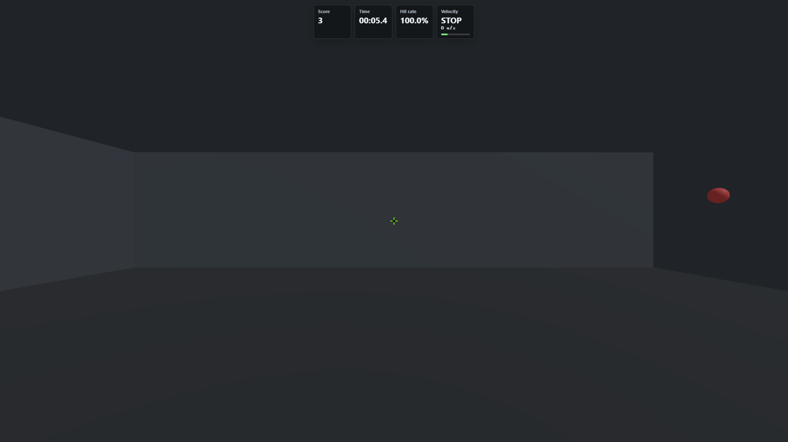

應該被評分
- 看見周邊目標後啟動視角移動的速度
- 依角距放大 peak velocity 的能力
- 在 2° 目標內完成制動與穩定的能力
- 不犧牲首發命中的完成速度
- 左右方向是否有可重現的不對稱

Measurement proposal · 2026-09-09
把一次約 40–70° 的大幅度拉槍拆成可觀測的反應、運動、急停、點擊與修正，同時把左右差、感度行程、投影足跡與抬鼠污染留在正確的分析層。
Wide flick 同時受到角距、左右側、FOV / aspect、cm/360、滑鼠墊行程與抬鼠行為影響。未有足夠真人資料前，把它們壓成一個分數會讓權重看似精確、實際不可解釋。
第一版應交付三個主結果：周邊有效命中速度、周邊首發命中率、乾淨 trial 的命中時間；其餘指標負責診斷。
引擎與公式正確性可用合成資料驗證；但 timeout 是否形成天花板、抬鼠標註效度、指標重測信度、左右差的正常範圍，以及任何常模或分數權重，都只能靠真人 repeated-measures 資料決定。
`spider-shot-wide-v1` 不是一般 click speed，也不是 v3 的更難版本。它是中心與近水平視野邊緣之間的反覆大幅度視角轉移，核心構念是大幅度 ballistic flick 後的制動與首發控制。
每個 center→peripheral trial 必須沿用同一組 canonical 錨點。先有事件，再談指標；沒有有效錨點的 trial 應標記狀態，不得以 0 補值。
結果、機制、條件與品質要分層。這可避免把「為什麼變慢」的證據誤當成「能力高低」，也保留日後做模型校正的空間。
peripheral_hits_per_minfirst_shot_hit_rateperipheral_hit_timet_hit − t_visible，同時報 median 與 p90。主分析排除硬體失效與標註污染；timeout 不刪除，另以 survival / timeout rate 表達。reaction_mst_onset − t_visible。需留意 KI-031；若 canonical detector 在低 aim update rate 下失效，整批不可混用繞道值。movement_time_mst_on_target − t_onset。這是大幅度 transport + braking 的總和，不等於反應時間。peak_omegaD_deg → peak ω 的 scaling curve，再對照 overshoot。path_efficiencyD_deg ÷ Σ angular_path_deg。接近 1 表示路徑直接；但抬鼠 trial 不應納入能力解讀。overshoot / drop / micro-adjustfire_angle_errorside_deltadistance_slopeblock_driftcm_per_360D/360 × cm/360；缺 DPI 時不得猜值。area_ratio / axis_ratiorepositioning_suspectedsustainedTicks:1 繞道資料不可混成同一 cohort下面是可切換的結果頁雛形。數字全部是示意資料，不是玩家基準；設計重點是先看結果輪廓，再依序鑽進 trial、左右差與資料品質。
示意資料 · 僅展示資訊層級與圖形選擇，不代表常模或及格線
點色代表 L/R；空心點代表疑似 repositioning，不納入實線模型。
中位數 phase decomposition，避免只看到總時間。
同一時間軸疊 angular error 與 |ω|，垂直線標出 onset、peak、on-target、shot 與 hit。
用 pooled median 當中心，直接看 Δms 與不確定區間。
依順序分四段，檢查疲勞 / 適應是否與 side 排程交織。
回答角距增加時速度如何退化；顏色分 L/R、空心分品質旗標，模型加入 footprint 與 trial index。
把總命中時間拆成 reaction、movement、click commit、correction，讓訓練建議對準真正瓶頸。
個案層最重要的圖；同時看加速、峰值、煞車、進靶、首發與 overshoot，不用猜失誤發生在哪。
顯示 L/R 調整後差與 95% CI。CI 跨 0 就只報「證據不足」，不硬貼弱側標籤。
四分段畫 hit time 與 first-shot rate，揭露熟練、疲勞與滑鼠空間耗盡。
把 timeout、無 detection、疑似抬鼠、lock break、sample overflow 畫在結果前面，先決定能不能解讀。
專案已有四份真人 run 將疑似 repositioning 候選門檻調到 150 ms / 2 deg/s，但它們來自 n=1、單一硬體，且指示與感度共線。這足以推翻舊門檻，不足以建立族群效度或常模。
確認每種硬體條件都能穩定取得 onset、on-target、shot、hit 與 side；同時量 timeout 與資料缺失原因。
建議 5–8 人 × 2 runswithin-subject 操弄感度與 lift / pause / one-shot 指示；跨 2–3 日重測。正式樣本量應由 Stage A 變異做 power simulation。
起始規劃 24–30 人 × 3 sessions依 FPS 段位、慣用手、cm/360 與設備分層，才可估 percentile、最小可偵測改變與任何 composite weight。
至少 100+，且需跨技能層| 問題 | 合成 / 引擎資料是否足夠 | 是否需要真人 | 建議判準 |
|---|---|---|---|
| D/W、side、事件時間是否正確 | 足夠 | 不需要 | deterministic、golden、round-trip 與幾何測試 |
| 2500 ms timeout 是否造成天花板 / 右截 | 不足 | 需要 | 各技能層 timeout rate + survival curve |
| 疑似抬鼠門檻是否可跨人 / 跨硬體 | 不足 | 需要 | event-level 標註；lift / pause 對照；靈敏度與偽陽 |
| 左右差是否為穩定個人特徵 | 不足 | 需要 | 跨 session ICC / repeatability，CI 控制 D 與 order |
| 指標能否預測實戰大角度轉移 | 不足 | 需要 | 與獨立 in-game transfer task 的 convergent / predictive validity |
| 總分權重與玩家等級 | 不足 | 需要大量資料 | 預註冊權重、外部效標、holdout validation；否則不發布 |
| 能力 | 現況 | 下一步 |
|---|---|---|
| reaction、movement time、peak ω、overshoot、drop、micro-adjust、first-shot error | 已有 canonical derivation | 直接用 deriveSpiderShotMetrics()，研究入口開 strict eye origin |
| D_deg、W_deg、side、condition cell | 已有 | 用 deriveSpiderShotTransitions()；wide 的 side 有實際語意 |
| 投影面積 / 軸比 | 已有研究共變量 | 用 deriveProjectedFootprint()，不得進教練評分 |
| counts/360、cm/360 | 已有 | 用 deriveMouseThrow()；DPI 缺席就回報不可算 |
| 疑似 repositioning | 已有候選標註 | 使用 150/2 僅限同硬體研究；跨硬體重校準 |
| peripheral hit time、path efficiency、time-to-peak、side-adjusted model | 尚未成為共同輸出 | 新增 researcher-only analysis artifact，不先接 DrillMetricRegistry |
| 歷史趨勢、compatibility key、玩家分數 | 刻意沒有 | 先完成真人信度與 aspect compatibility，再另開 Assessment promotion WP |